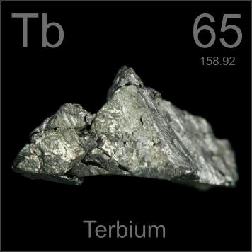

HOME
PREVIOUS
NEXT

Terbium
Atomic Weight: 158.92535
Density: 8.219 g/cm3
Melting Point: 1356 °C
Boiling Point: 3230 °C
Terbium is a vital ingredient of magnetorestrictive alloys, ones that change length when exposed to a magnetic field. Such alloys are used in loudspeakers designed to push against solids rather than against air.